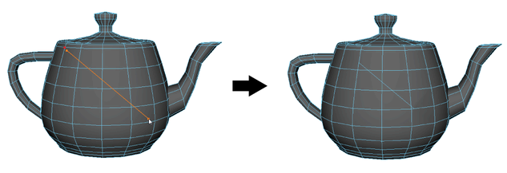

您可以使用“多切割工具”(Multi-Cut Tool)沿直面对多边形进行切片，然后提取或删除切割面上方或下方的面。
使用自定义平面对网格进行切片
- 选择要进行切片的网格或网格面。
- 打开多切割工具。
- （可选）为要粘附到的切割边设置激活的曲面。
- 单击网格两侧以定义两个切片点。
切片点之间将显示一个橙色切片预览线。此线表示切片平面。注： 放置切片点时，可以使用栅格捕捉（按住 X）或点（按住 V）捕捉。
- 要编辑切片平面，请执行以下操作：
- 按住鼠标中键并拖动以重新定位平面。
- 拖动以重新定位切片点。
- （可选）如果仅需切片面对摄影机保持可见，则在“建模工具包”(Modeling Toolkit)窗口中，选择“切片工具”(Slice Tool)选项中的忽略背面(Ignore Backfaces)。
- （可选）否则，如果要分别删除或分离切片面，请选择删除面(Delete Faces)或提取面(Extract Faces)。
此时将出现一条垂直于切片预览线的虚线，指示将删除或提取面的网格一侧。

- 按 Enter 键或单击鼠标右键沿切片平面切割网格。
或者，如果无需编辑任何点或工具包选项，则可以使用快速切片。
快速对网格进行切片
- 选择要进行切片的网格。
- 打开多切割工具。
- 使用鼠标中键拖动到网格上的任意位置以进行剪切。

最后，可以使用“切片工具”(Slice Tool)选项沿预先确定的平面进行切片。
使用预先确定的平面对网格进行切片
- 选择要进行切片的网格。
- 打开多切割工具。
- （可选）在显示的“建模工具包”(Modeling Toolkit)窗口中，选择“切片工具”(Slice Tool)选项中的“删除面”(Delete Faces)或“提取面”(Extract Faces)。
- 单击其中一个“沿平面的切片”(Slice Along Plane)按钮。
将沿选定平面对网格进行切片，并显示一个操纵器。
- 使用操纵器调整切片。